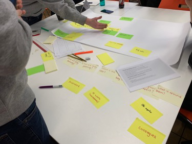
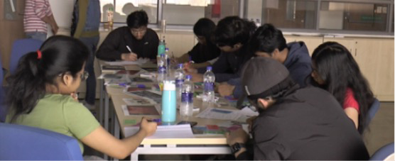

I am an educator and researcher in human-technology interaction conducting empirical research, literature reviews, and writing research publications.
Practice-based research with a focus on user experience to investigate the effects of technology on human behaviour, communication and social interaction.
I've led three research labs in Design Innovation. The common aim across them has been to create environments that support diverse perspectives from people with a variety of backgrounds and interests. Where teaching, mentorship, research and real-world impact blend together to support staff and student development.

Led research, managed courses taught within the lab, curriculum development and academic quality.

Supervised over 30 students across a range of topics, leading to 13 publications in national and international conferences.
Co-led an interdisciplinary lab on human interactions with autonomous vehicles for improving how AVs communicate their actions to other road users.
MSc scholar's research explored how to mitigate household food waste by co-creating ideas for future technologies with local community stakeholders. In Estonia, food waste is a growing concern, with an estimated 180,747 tons generated annually, approximately 127 kg per inhabitant.
Her thesis evaluated the effectiveness of futures thinking and speculative design techniques for re-imagining household food waste management. Through a series of creative workshops, participants developed ideas for smarter, more sustainable everyday practices. The work contributes to improving policy making through participatory design.
Public understanding and acceptance of AVs requires engagement with people who live in, work at or visit cities where they are deployed on public road networks.
Detailed investigations of how people actually perform their jobs in real-world settings, aimed at guiding the design of collaborative technology.